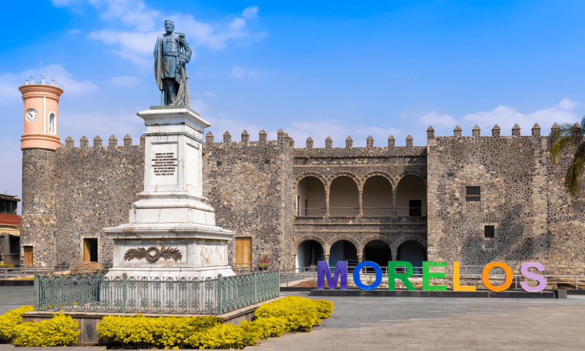

Cuernavaca

Cuernavaca, conocida como "La Ciudad de la Eterna Primavera", es la capital de Morelos y uno de los destinos turísticos más importantes del centro de México. Su clima templado y vegetación exuberante la convierten en un lugar ideal para el descanso, la historia y la cultura.
¿Qué hacer en Cuernavaca?
- Visitar el Palacio de Cortés, una fortaleza histórica construida en el siglo XVI.
- Pasear por el Centro Histórico, con sus jardines, iglesias y mercados.
- Explorar el Jardín Borda, una antigua residencia de verano rodeada de flora tropical.
- Relajarte en balnearios como Las Huertas o Las Estacas, muy cerca de la ciudad.
Gastronomía típica
Cuernavaca es el hogar de los famosos tacos acorazados, que combinan arroz, guisado y tortilla gruesa. También puedes probar mole verde, cecina, tamales de ceniza y una gran variedad de nieves artesanales.
Fiestas y tradiciones
- Carnaval de Cuernavaca: Se celebra con comparsas, chinelos, danzas y música en febrero o marzo.
- Semana Santa: Procesiones y eventos religiosos en las parroquias principales.
- Fiesta de la Santa Cruz: Celebrada el 3 de mayo, con ferias, juegos pirotécnicos y bailes populares.